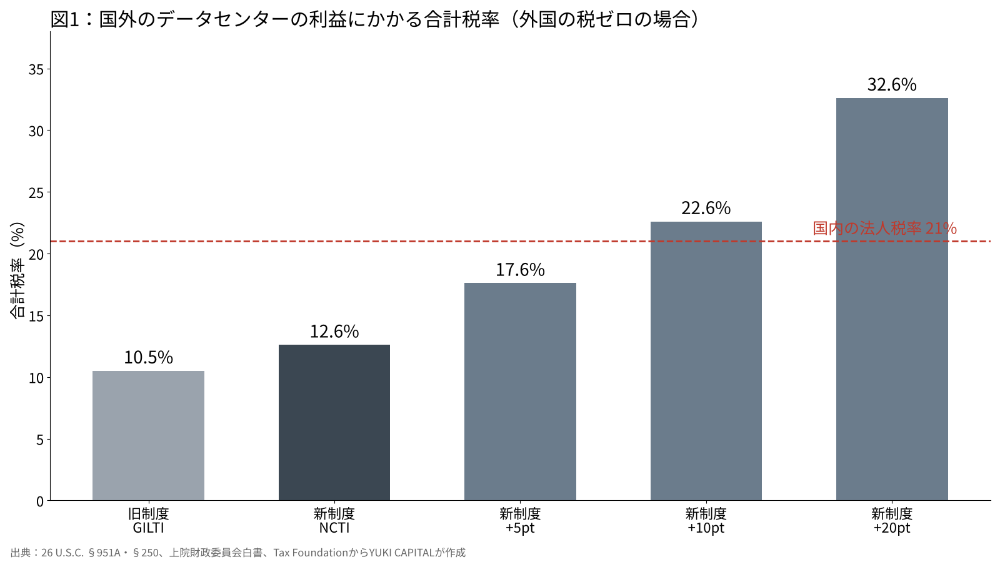
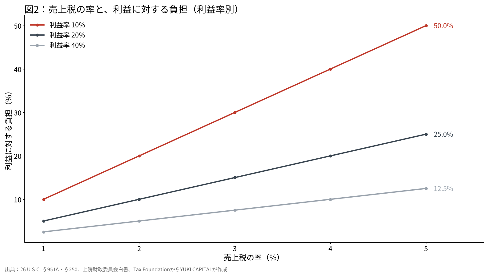

米国の外にデータセンターを建てる会社に、課税はできるのか――トランプ大統領の発言を、内国歳入法の第951A条とワイデン議員の白書で検証
2026年11月20日（米国時間）、トランプ大統領は会見で、米国の外にデータセンターを建てる米国企業に巨額の税を課す方針を示した[7]。課税の方法や法律の根拠には触れていない。
同じ週、日米台韓のAI関連株は大きく下げていた。設備の置き場所に税が絡めば、ハイパースケーラーの年数千億ドルの投資計画が変わりうる。
本稿の問いは、国外のデータセンターに課税する仕組みはすでにあるのか、そして新しい課税は、国内に建てるより国外を不利にできるのか、である。

- 国外の子会社の利益には、すでに「純CFC試験所得（旧GILTI）」として実効12.6%の米国税がかかる。国内の法人税21%との差は8.4ポイントで、上乗せ課税が8.4ポイントを超えれば国外の優位は消える。
- 議会で出ている案（ワーナー議員・ワイデン議員）は、国外ではなく「国内の新しいデータセンター」への優遇を外す方向で、大統領の発言とは向きが逆である。
- 売上にかける税は、利益率が低い会社ほど重い。売上の4%の税は、利益率10%の会社には利益の40%に当たる。課税の形しだいで、誰が不利になるかが大きく変わる。
問いと背景
米国の法人税率は21%である。米国企業が外国に子会社を作り、そこで利益を上げると、その利益は外国の税の対象になる。この外国の子会社を、米国の税法では「被支配外国法人（CFC）」と呼ぶ。CFCとは、米国の株主が議決権か価値の50%超を持つ外国法人を指す[3]。
2017年の税制改革で、CFCの利益に毎年米国の税をかける仕組みが入った。これが「GILTI（国外の無形資産から生まれる低課税所得）」である[3]。株主の米国法人は、その所得の50%を差し引けたため、実効税率は21%×50%＝10.5%だった[4][5]。
2025年7月に成立した税制法（H.R.1）は、GILTIを「純CFC試験所得（NCTI）」へ改め、差し引ける割合を40%に下げた[5][6]。2026年以降の実効税率は21%×60%＝12.6%になる。外国の工場や設備の簿価の10%を所得から外せた「有形資産の控除」もなくなった[8]。
データセンターは、まさに有形資産の塊である。旧制度では、外国に建てた設備の簿価の10%分の利益が非課税になっていた。新制度ではこの非課税枠が消えたため、国外のデータセンターの利益は、すでに以前より重く課税されている。
一方、議会では別の方向の議論が進んでいる。2026年7月、ワーナー上院議員は、AIのデータセンターの設備に即時償却を認めない法案を出した[2]。8月には、上院財政委員会の民主党スタッフが、データセンターの売上に「低い1桁台」の税をかける白書を出した[1]。どちらも対象は米国内の新しいデータセンターである。
ここで用語を2つ定めておく。「即時償却」とは、設備の購入額を、何年にも分けずに買った年に全額経費にできる仕組みを指す。「ハイパースケーラー」とは、自社で巨大なデータセンターを持ち、クラウドやAIを世界に売る大手のことで、アマゾン・マイクロソフト・グーグル・メタなどが当たる。即時償却が外れると、税の総額は同じでも、払う時期が前に来る。
白書には、国外の話も1行だけある。米国の市場向けに国外で動くデータセンターは「さらに検討が要る」とされ、宇宙に置くデータセンターも米国の顧客に売るなら課税し、支払いから源泉徴収するとしている[1]。国外を狙った課税は、議会でもまだ形がない。
データと方法
使う資料は、内国歳入法の第951A条（CFCの所得の合算）と第250条（所得控除）[3][4]、2025年の税制法の条文[9]、IRSの申告書8992の説明[10]、上院財政委員会の白書[1]、タックス・ファウンデーションの試算[2]である。会計事務所の解説[5][6][8]は、条文の読み方の確認に使った。
第1の計算は、国外のデータセンターの利益にかかる米国税の実効税率である。式は「法人税率21%×（1−控除割合）」で、控除割合は旧制度50%、新制度40%とする。外国で払った税は外国税額控除で差し引けるが、新制度では控除できるのは90%までである[5]。
第2の計算は、大統領の言う「巨額課税」を、国外のデータセンターの利益への上乗せ税率sと置いたときの比較である。国外の合計税率は「12.6%＋s」、国内は21%で、sを0・5・10・20ポイントと動かす。
第3の計算は、白書の売上税を利益に対する負担に直したものである。売上税の率をg、利益率をmとすると、利益に対する負担は「g÷m」になる。gを1〜5%、mを10%・20%・40%と動かして感度を見る。
結果
国外のデータセンターの利益にかかる米国税は、旧制度の10.5%から、新制度で12.6%に上がった。率の上昇は2.1ポイントだが、有形資産の控除が消えた分、設備の多いデータセンターでは課税される所得そのものも大きくなる。国内に建てた場合の21%との差は、10.5ポイントから8.4ポイントに縮んでいる。
| 場合 | 国外の合計税率 | 国内（21%）との差 |
|---|---|---|
| 旧制度（GILTI、控除50%） | 10.5% | −10.5ポイント |
| 新制度（NCTI、控除40%） | 12.6% | −8.4ポイント |
| 新制度＋上乗せ5ポイント | 17.6% | −3.4ポイント |
| 新制度＋上乗せ10ポイント | 22.6% | ＋1.6ポイント |
| 新制度＋上乗せ20ポイント | 32.6% | ＋11.6ポイント |
規模の目安も置いておく。ゴールドマン・サックスは、米国の大手数社のAI関連の設備投資を2026年に5,810億ドルと見込む[2]。仮にその1割が国外に建ち、そこで投資額の10%の利益が出るとすると、利益は約58億ドルになる。上乗せ10ポイントで、米国の追加の税収は約5.8億ドルである。
上乗せが8.4ポイントを超えると、国外に建てる税の優位は消える。逆に言えば、「巨額」でなくても、10ポイント前後の上乗せで国内と国外の税は並ぶ。ただしこれは、外国の税がゼロの場合の計算である。

白書の売上税は、利益率で負担が大きく変わる。下の図は、売上税の率と利益に対する負担の関係を、利益率ごとに描いたものである。

感度分析
売上の2%の税は、利益率40%の会社には利益の5%にすぎないが、利益率10%の会社には20%になる。売上の4%なら、利益率10%の会社で40%、利益率20%で20%である。タックス・ファウンデーションも、4%の売上税は利益に対して40〜200%の負担になりうると試算している[2]。
データセンターを自社で使う大手は、AIやクラウドで高い利益率を持つ。一方、設備を貸して利ざやを取る会社は、利益率が低いことが多い。売上税は、借金で設備を持って貸す会社ほど重くなる。
上乗せ課税の側も、外国の税の水準で結果が変わる。外国で15%の税を払う場合、新制度では15%×90%＝13.5%が控除でき、米国の12.6%を上回る。この場合の追加の米国税はゼロで、合計は15%になる。上乗せがこの控除の外に置かれるかどうかで、効果は大きく変わる。
考察
反対の見方もある。タックス・ファウンデーションは、データセンターへの新しい課税は複雑さを増し、AIの投資を国外へ押し出すおそれがあると指摘する[2]。国内の新しいデータセンターの優遇を外せば、国外に建てる理由をむしろ増やしてしまう。大統領の発言は、その逆の流れを止めたい意図とも読める。
規模も確かめておく。白書は、ハイパースケーラーのデータセンター投資を今年約7,000億ドルと見ている[1]。ワーナー議員の案の税収は、10年で約299億ドルとの試算である[2]。年の投資額に比べて、税収は1桁小さい。
もう1つの見方は、税より電力と土地が場所を決めるというものだ。白書は、米国内のデータセンターの建設が過去4年で4倍になったと書く[1]。電力の確保が難しくなれば、税が少し重くても国外を選ぶ会社は出る。税率の差8.4ポイントは、電気代の差に比べて小さい可能性がある。
限界は3つある。第1に、大統領の発言には条文がなく、上乗せの形は仮定である。第2に、外国の税と各国の最低課税（15%）の扱いは国ごとに違い、本稿は単純化している。第3に、白書の売上税は率が「低い1桁台」としか書かれていない[1]。
答え合わせの基準は、条文が出るかどうかである。上乗せがNCTIの控除割合を下げる形なら、本稿の表がそのまま使える。売上税なら、図の利益率の線で見ればよい。どちらも出なければ、発言は相場を動かしただけで終わる。
結論
国外のデータセンターの利益には、すでに実効12.6%の米国税がかかっている。国内との差は8.4ポイントで、上乗せがそれを超えれば国外の税の優位は消える。議会の案は国内の優遇を外す方向で、発言とは向きが違う。税の形しだいで、重くなるのは利益率の低い、設備を貸す側である。
僕はこう見ている
僕の実業は日本の中で完結していて、海外に拠点や設備を持つことは考えていない。たかが数億の規模で、国外の税を気にする段階にない。持っているのは、AIのフロント企業の株である。売上税が入っても、重くなるのは借金で設備を持つ側だと僕は見ている。だから、この発言で保有は動かさない。
参考文献
- Senate Finance Committee Democratic Staff「Proposal for the Taxation of Data Centers」（2026年8月） https://www.finance.senate.gov/imo/media/doc/080626_wyden_data_center_tax_white_paper.pdf
- Tax Foundation「New Congressional Data Center Tax Proposals Threaten US AI Investment」（2026年8月13日） https://taxfoundation.org/blog/congressional-data-center-tax-proposals-us-ai-investment/
- 26 U.S. Code § 951A（Cornell LII） https://www.law.cornell.edu/uscode/text/26/951A
- 26 U.S. Code § 250（Cornell LII） https://www.law.cornell.edu/uscode/text/26/250
- EY Tax News「International tax changes in final reconciliation legislation」（2025年7月29日） https://taxnews.ey.com/news/2025-1613
- WilmerHale「International Tax Provisions of the One Big Beautiful Bill Act」（2025年7月14日） https://www.wilmerhale.com/en/insights/client-alerts/20250714-international-tax-provisions-of-the-one-big-beautiful-bill-act-obbba
- みんかぶFX「NY時間に伝わった発言・ニュース」（2026年11月21日） https://fx.minkabu.jp/news/385141
- Plante Moran「One Big Beautiful Bill modifies international tax rules」（2025年10月） https://plantemoran.com/explore-our-thinking/insight/2025/10/one-big-beautiful-bill-modifies-international-tax-rules-enacted-in-the-tcja
- Congress.gov「H.R.1 - One Big Beautiful Bill Act」 https://www.congress.gov/bill/119th-congress/house-bill/1
- IRS「About Form 8992」 https://www.irs.gov/forms-pubs/about-form-8992
図はYUKI CAPITALが作成。写真：Unsplash
日々の数字と判断は、Xで記録している。